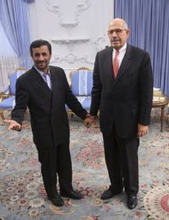
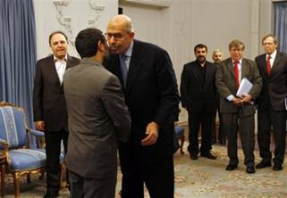
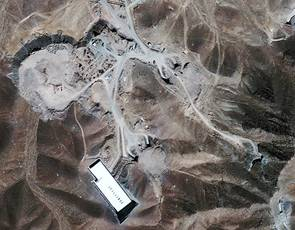

Onthullingen door het Internationaal Atoom Energie Agentschap (IAEA), de nucleaire ‘waakhond’ van de Verenigde Naties, duiden erop dat Iran veel verder is in de ontwikkeling van een nucleair wapenarsenaal dan wat uit de vorige rapporten van deze club is gebleken. Het IAEA zegt zich zorgen te maken over het feit dat Iran wel degelijk bezig is met de ontwikkeling van atoomwapens en dat Iran daar slechts enkele stappen van verwijderd is. Het “geheime” rapport is gelekt naar nieuwsagentschappen in de hele wereld. Dat het IAEA met deze feiten naar buiten komt is opmerkelijk aangezien deze club, die sinds december 2009 onder leiding staat van de Japanner Yukiya Amano, na jaren van liegen nu plotseling toegeeft dat Iran wel degelijk met de ontwikkeling van een atoomwapen bezig is.
De voormalige moslimbaas van de IAEA de Egyptenaar ElBaradei, heeft jarenlang doelbewust cruciale en belastende feiten over het kernwapenprogramma van Iran, buiten de officiële rapporten van de Verenigde Naties gehouden en steevast het bestaan van de militaire nucleaire inspanningen van Teheran ontkent. Hij werd algemeen beschouwd als de belangrijkste supporter en weldoener van de Iraanse Ayatollahs en hun terreurleider Mahmoud Ahmadinejad.
Ahmadinejad en ElBaradei, hand in hand
samen tegen Israël
In 2005 besloot het Nobelprijs Comité in een vlaag van verstandsverbijstering en een bizarre klucht de Nobelprijs voor de vrede aan de arrogante en zelfingenomen ElBaradei toe te kennen. Het Comité prees hem "voor zijn inspanningen de wereld te behoeden van nucleaire inspanningen voor militaire doelen”. Hij kreeg deze prijs uitgereikt terwijl al lang bekend was dat hij bewijsmateriaal over Iraans nucleaire ambities verdoezelde.Toen in 2002 diverse internationale inlichtingendiensten bewijzen in handen kregen dat Iran belangrijke informatie achterhield en dat aan het Atoomagentschap doorspeelde, negeerde ElBaradei die en deed hij alle mogelijke inspanningen om de betrouwbaarheid van deze informatie te ondermijnen.
Ook kwam hij herhaaldelijk tussenbeide om de verslagen van zijn inspecteurs over de nucleaire installaties van Iran te vervalsen en zorgde ervoor dat de periodieke rapporten over Iran werden gecamoufleerd in diplomatieke wartaal. ElBaradei’s 12 jarige regeerperiode stond in het teken van manipulatie, het verkondigen van regelrechte leugens, het demoniseren van Israël, en het likken van de hielen van het Iraanse terreurbewind.
In 2006 beweerde hij “geen
bewijs te hebben ontdekt” voor mogelijke militaire aspecten van Iran’s
nucleaire programma, hoewel dat toen al voor iedereen volkomen duidelijk was.
Hij was tegen sancties tegen Iran, laat staan dat hij wilde spreken van een
militair optreden, en probeerde herhaaldelijk om een dialoog aan te gaan met
Teheran om een compromis te bereiken. In Januari
De relatie van ElBaradei met Israël, dat hij tweemaal bezocht, was gespannen. Israël heeft haar terughoudendheid ten aanzien van het IAEA al lang laten varen. In plaats van zich te concentreren op de nucleaire ambities van Iran en Syrië, hield ElBaradei zich bezig met het kritiseren van de Joodse staat en noemde hij Israëls nucleaire arsenaal een serieuze bedreiging voor de wereldvrede. Dat standpunt is schaamteloos verkeerd. Hij creëerde met dit soort uitspraken een situatie dat Israël gezien wordt als een gevaarlijke vijand en dat geeft Israël’s vijanden het recht om ook nucleaire wapens te ontwikkelen om zich zogenaamd te verdedigen. Maar Israël is niet de agressor. Het bezitten van een atoomwapen zien de moslimleiders als hét ultieme middel om Israël van de kaart te vegen. Tot grote ergernis van het internationale agentschap heeft ElBaradei herhaaldelijk gepleit voor een nucleair-vrij Midden-Oosten, dat werd geïnterpreteerd als uitsluitend gericht tegen Israël.
Tijdens zijn bezoek aan Iran en ontmoeting met president Ahmadinejad op 4 oktober 2009 haalde hij tot grote vreugde en instemming van het apocalyptische terreurbewind andermaal uit naar Israël en noemde hij ,,Israël de grootste bedreiging voor de vrede in het Midden-Oosten gezien het feit dat ze nucleaire wapens bezitten.” Tijdens een gezamenlijke persconferentie met Ali Akbar Salehi, de directeur van de Iraanse Atoomenergie Organisatie in Teheran, zei hij “dat het regime van Tel Aviv al 30 jaar weigert om inspecties toe te laten in haar nucleaire installatie in Dimona.”
ElBaradei nogmaals op bezoek bij zijn
goede vriend Ahmadinejad
Van Israël wordt algemeen aangenomen dat het nucleaire capaciteiten heeft, maar Israël heeft dat altijd geweigerd te bevestigen of te ontkennen. In 2009 heeft het IAEA met kleine meerderheid een resolutie goedgekeurd waarin de organisatie bezorgdheid uitspreekt over de kernwapens van Israël en wordt de Joodse staat opgeroepen tot zijn volledige kernprogramma door het agentschap te laten inspecteren.De tekst werd met 49 stemmen voor en 45 tegen goedgekeurd. De voorstemmen kwamen vooral van islamitische ontwikkelingslanden. Tegen stemden onder meer de Verenigde Staten en de landen van de Europese Unie.
Van de permanente leden van de VN-veiligheidsraad schaarden China en Rusland zich achter de resolutie. Beide landen beschikken zelf over allesvernietigende atoomwapens. Rusland heeft zelfs de drempel voor het gebruik van kernwapens verlaagd omdat er volgens president Medvedev sprake zou zijn van een toenemende militaire dreiging. Tot dusver was het gebruik van kernwapens alleen voorzien voor gevallen waarin het bestaan van Rusland werd bedreigd. Volgens de nieuwe uitgangspunten voor de veiligheid kan Rusland nu naar de kernwapens grijpen om gewapende agressie af te slaan.
In een interview begin november 2009 met de New York Times zei ElBaradei dat de VN-inspecteurs in Iran bij de geheime uraniumverrijkingsfabriek bij Qom ‘niets hadden gevonden om zorgen over te maken’. De locatie zou volgens hem niet meer zijn dan een ‘een gat in een berg’, bedoeld als back-up voor het geval dat de nucleaire installatie bij Natanz zou worden vernietigd. Maar het hoofd van de Israëlische militaire inlichtingendienst, generaal-majoor Amos Yadlin, zei dat de nucleaire installatie in Qom ‘onmogelijk voor civiele doeleinden gebruikt kan worden’. Het complex is volgens hem specifiek ontworpen voor verrijking van uranium. Ook diplomaten die toegang hebben tot bronnen en informatie van het IAEA in Wenen hebben bevestigd dat VN-inspecteurs bij hun onderzoek in Qom hebben geconstateerd dat het hier om een versterkte ondergrondse installatie gaat die dienst kan doen als faciliteit voor het produceren van hoogverrijkt uranium voor kernwapens.
Nucleaire installatie in Qom
De bevindingen van het inspectieteam spreken de beweringen van Mohamad ElBaradei dus volkomen tegen. Opnieuw is duidelijk geworden dat het jarenlang de tactiek van ElBaradei is geweest om zoveel mogelijk tijd voor Iran te rekken, om zo het land in staat te stellen door te gaan met het ontwikkelen van nucleaire wapens. De diplomaten onthulden tegenover persbureau Associated Press tevens dat Iran al 7 jaar geleden is begonnen met de bouw van de militaire installatie bij Qom, en dat het project in de loop van 2010 kan worden voltooid. Ook dit bewijst de ware intenties van Iran's nucleaire programma, dat tot nu toe is blijven volhouden dat het slechts vreedzame bedoelingen heeft.
Amerikaanse en met name Israëlische bronnen veroordelen ElBaradei’s misleidende handelswijze als een diplomatiek schandaal dat grenst aan fraude. Op het eind van zijn ambtstermijn gaf hij toe de uraniumproductie van Iran onderschat te hebben en zei hij dat Iran overduidelijk bepaalde delen van haar nucleaire programma afschermt. In zijn laatste rapport schreef hij substantieel bewijs te hebben ontdekt dat dit programma meer dan alleen gericht is op kernenergie, maar dat hij ‘tot zijn spijt’ deze informatie niet kon onthullen, omdat hij dan zijn bronnen zou verraden. Ook legde hij verklaringen af waarbij hij de indruk gaf ontwaakt te zijn uit zijn illusie dat Iran kan worden overtuigd om compromissen te sluiten. Met deze verklaringen probeerde hij zijn leugenachtig en frauduleus imago nog enigszins te zuiveren.
Het hoofd van het Iraanse Atoom Agentschap, Fereydoun Abbasi heeft in een interview met de internationale Arabische krant Al-Hayat toegegeven dat de regering in Teheran meerdere malen doelbewust heeft gelogen over het nucleaire programma van het land. 'Om onze nucleaire faciliteiten en onze successen te verdedigen hebben we hen (de inspecteurs van het IAEA) soms valse informatie gegeven. We hadden geen andere keus dan het IAEA en andere spionnen te misleiden.'
ElBaradei,s slechte reputatie heeft ook het Atoomagentschap van de VN een bezoedeld imago opgeleverd. Het laatste rapport wat onder leiding van de Japanner Yukiya Amano is verschenen, lijkt daarom bedoeld om het imago van het IAEA te verbeteren. Dat Iran wel degelijk werkt aan de ontwikkeling van atoomwapens, wordt nu schoorvoetend door het atoomagentschap toegegeven omdat ze dat niet langer kunnen ontkennen.
Terug naar: Inhoud